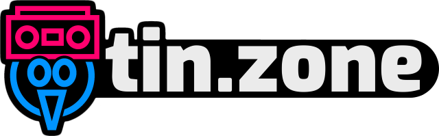

About Me
Here are some facts about me. Hopefully some of them are cool!
- he/him
- My real name is not Tin or tininsteelian.
- I'm 23 years old (unless I forgot to update this page and I'm older now).
- My favorite color is red.
- I unironically love clip art and WordArt.
- I have over 150,000 MIDI files on my computer.
- I own way too many video games.
- Here are some game series that I like a lot: Burnout, Gran Turismo, Mario Kart, Midtown Madness, Picross, Puyo Puyo, Ridge Racer, Rocket League, Splatoon, Super Mario Maker, Super Monkey Ball, Super Smash Bros., Tetris, TrackMania
- I love racing games, both arcade and simulation.
- I like golf games, despite never having played real golf before.
- I own the complete set of XSN Sports games for the original Xbox for some reason.
- I like playing bad games on occasion.
- I have the magenta printing plate for Limited Run Games' Ace of Seafood trading card (#213).
- I have every Super Smash Bros. amiibo (except Gold Mega Man if you count that one). I'm buying all of the new Smash Ultimate amiibo as they come out because I have to at this point.
- My main in Smash Ultimate is Corrin. I also like playing Kirby, Ridley, Mr. Game & Watch, and Young Link, among others.
- I was a big Sonic the Hedgehog fan when I was a kid.
- I submitted speedruns to three different Games Done Quick events, and none of them were accepted!
- I used to have the world record speedrun for Hot Wheels Stunt Track Driver, but I don't anymore.
- I started making games for fun back in 2003 when I was 7 years old. When I started, I used a program called The Games Factory to make them. Nowadays, I mostly use Construct 2.
- My favorite programming language is Java.
- I'll probably get around to making a releasable thing with Unity eventually.
- When I was 9, I created a fictional country called the United Pets of America. All of my stuffed animals lived there, and I made a bunch of comics and videos about them.
- I wrote a bunch of weird stories and plays as a kid.
- I made a popular tweet once.
- My favorite flavor of potato chips is sour cream and onion.
- Here are some more links to sites that I almost never post anything on: Tumblr Mastodon Reddit Speedrun.com DeviantArt SoundCloud
- My username is tininsteelian on Xbox Live, PSN, Nintendo Network, and Steam.
- My Xbox Live username used to be Sonic Boom 768. Those were dark times.
- 3DS Friend Code: 1264-0003-0225
- Switch Friend Code: SW-4278-6103-7325
- I probably won't add you unless I know who you are. Sorry!